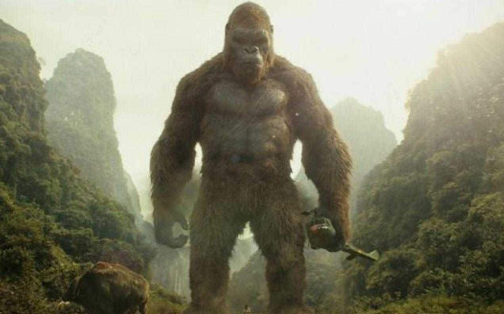

金刚骷髅岛
乔丹·沃格-罗伯茨
影片

上世纪70年代，一支集结了科考队员、探险家、战地摄影记者、军人的探险队，冒险前往南太平洋上的神秘岛屿——骷髅岛。他们的到来惊扰了岛上之神——史上最大金刚。经过一番惨烈的激战之后，探险队员散落在了岛屿各处。此时，队员们才意识到这次探险并不是一次单纯的科考任务，而是去探索怪兽存在的证明。 在这片与世隔绝、危险密布的丛林，无数怪异的史前生物暗藏其中，时刻威胁着他们的生命。 队员们还遇到了神秘的原始部落，金刚的身世和其守护岛屿的原因也被逐渐揭开， 原来，恐怖阴森的骷髅岛上还蛰伏着更凶狠残暴的怪兽……
直达
影评
给IMAX特制版片头一万个赞！要知道每次看IMAX最爱看的就是那个“屏息以待”倒计时片头，今天还是头一回看到制作成符合剧情的设计…没有“美女与野兽”式剧情，没有帝国大厦顶峰对决，依然被金刚的“大”震的合不拢嘴…最爱他孤独的背影，越大越孤独。
获奖
第90届奥斯卡金像奖 最佳视觉效果(提名) 杰夫·怀特 / 斯蒂芬·罗森包姆 / 斯科特·波恩 / 迈克尔·迈纳杜斯
第45届动画安妮奖 最佳真人电影动画角色(提名)
第16届美国视觉效果协会奖 最佳特效电影视觉效果(提名)
第45届动画安妮奖 最佳真人电影动画角色(提名)
第16届美国视觉效果协会奖 最佳特效电影视觉效果(提名)
剧照
 |
 |